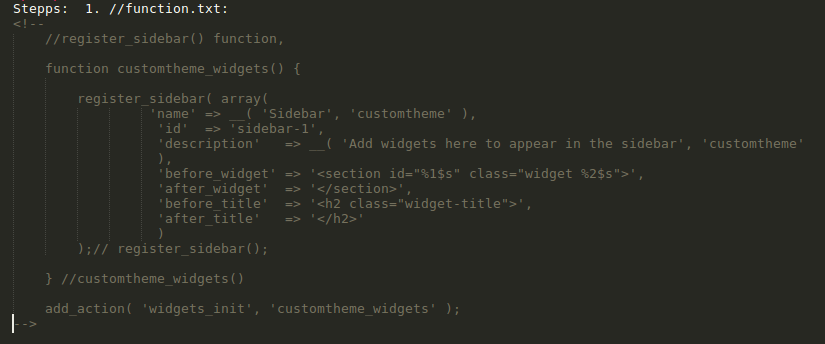

Lesson_1: Terminlogy
- Functions
- Tempalte Tags
- Hooks
- Action
- Filter
- Post Types
- Wp Recognised files
- Wp folder structure
- which grabs sthing from the database Responsible for displaying dynamic content on the page
- Responsible for displaying dynamic content on the page
- which grabs sthing from the database Responsible for displaying dynamic content on the page
Action hooks (or actions)
- def: are triggered when something takes place, such as loading a page, a user logging in, or a custom action that you define in your theme or plugin.
- for example:
wp_enqueue_scripts
widgets_init
loop_start
wp_enqueue_style
after_setup_theme
-
Example:
class emailer { static function send($post_ID) { $friends = 'bob@example.org,susie@example.org'; mail($friends,"sally's blog updated",'I just put something on my blog: http://blog.example.com'); return $post_ID; } } add_action('publish_post', array('emailer', 'send'));
Filter Hooks
def: Filter hooks, or filters, control how something happens or change something that's already being output.
- Page
- Post
- Attachment
- Revision
- Nav Menu
- -other website template files -these can be applied in wp-admin
- Template_parts
- index.php (homepage template)
- styles.php
- functions.php
1. Functions
def: Functions are specifieng how should sthing happen Functions defined by you: (they need to be defined in functions.php) Built in functions
2. Template Tags
3. HOOKS (Caller of functions)
def: Hooks are defining, at which happening/ocassion should a function be called.
4. Post types:
Def: Referrs on what kind of content type does the page have
Types:
5. Wp_Folder_Structur
New_ThemeLesson_2:Built_in_Functionionalities
- 2/1 .1 wp_enqueue_style("name", "stylesheet reference"); //functions.php
- 2/1 .2 wp_title(); //in html
- 2/1 .3 do_action("hook", "your function"); //function.php //triggers the function, when the hook happens
- 2/1 .4 register_nav_menus( array( "menu location" => "description" ) ); //registeres a menu in the wordpress database // check at: important processes/register menus //function.php //after_setup_theme //location is preregistered in html via wp_nav_menu() //more args in wp documentation
- 2/1 .5 wp_nav_menu() //it registeres a menu location in the html code //check at: important processes/register menus //important args: 'theme_location', 'item_wrap', 'container', 'menu class' //more args in wp documentation
- 2/1 .6 add_theme_support("feature"); //function.php // applies a feature built in wp... like display title-tag
- 2/1 .7 wp_head(); //inserts the enqueued scripts and styles and triggers the wp head function // in html at end of wp_footer(); //inserted before the ending body tag, gives an admin bar on the top of the page if logged on
The-Loop
The Loop is PHP code used by WordPress to display posts.
Important documenttation: https://codex.wordpress.org/The_Loop
- echo the_permalink()
- get_the_date()
- have_posts()
- the_author()
- the_content()
- the_post();
- the_title()
https://codex.wordpress.org/Function_Reference/the_title
Important: All the tags have different parameters to customise there output
Hooks
- Filter Hooks
- Action Hooks
- add_action()
function adds the action to WordPress that tells it to call the send method when a post is published.
- wp_enqueue_scripts
- widgets_init
- loop_start
- wp_enqueue_style
- after_setup_theme
Example:
Shortcodes
With shortcodes you can create custom functionaltites, that work in text editor of: wp-myadmin/posts/text-editor
Shortcodes_Summary
Valid Shortcode:
Shortcode Development Documentation https://codex.wordpress.org/Shortcode_API
Further Example shortcode_example.php
Wp-Webiste-Templates
Def:Templates are PHP source files used to generate the pages requested by visitors, and are output as HTML. Template files are made up of HTML, PHP, and WordPress Template Tags.
Modular, reusable files, used to generate the web pages on your WordPress site. Some template files (such as the header and footer template) are used on all of your site’s pages, while others are used only under specific conditions.
(This article explains how WordPress determines which template file(s) to use on individual pages)
Mainly you define which template should be used for which particular site when you create the page at wp-admin/pages/add_new#page_attributes
- Website Template Files
- Webiste partial Template Files
1. Website-Template-Files
Material:
https://codex.wordpress.org/Theme_Development
Hierarchy And structure: templates, template tags, and the WordPress Loop
With templates you can provide alternative templates for specific site features, such as category pages and search result pages.
Interresting:

Each and every theme file must have a File Header
- style.css
- The main stylesheet. This must be included with your Theme, and it must contain the information header for your Theme.
- rtl.css
- The rtl stylesheet. This will be included automatically if the website's text direction is right-to-left. This can be generated using the RTLer plugin.
- index.php
- The main template. If your Theme provides its own templates, index.php must be present.
- comments.php
- The comments template.
- front-page.php
- The front page template.
- home.php
- The home page template, which is the front page by default. If you use a static front page this is the template for the page with the latest posts.
- single.php
- The single post template. Used when a single post is queried. For this and all other query templates, index.php is used if the query template is not present.
- single-{post-type}.php
- The single post template used when a single post from a custom post type is queried. For example, single-book.php would be used for displaying single posts from the custom post type named "book". index.php is used if the query template for the custom post type is not present.
- page.php
- The page template. Used when an individual Page is queried.
- category.php
- The category template. Used when a category is queried.
- tag.php
- The tag template. Used when a tag is queried.
- taxonomy.php
- The term template. Used when a term in a custom taxonomy is queried.
- author.php
- The author template. Used when an author is queried.
- date.php
- The date/time template. Used when a date or time is queried. Year, month, day, hour, minute, second.
- archive.php
- The archive template. Used when a category, author, or date is queried. Note that this template will be overridden by category.php, author.php, and date.php for their respective query types.
- search.php
- The search results template. Used when a search is performed.
- attachment.php
- Attachment template. Used when viewing a single attachment.
- image.php
- Image attachment template. Used when viewing a single image attachment. If not present, attachment.php will be used.
- 404.php
- The 404 Not Found template. Used when WordPress cannot find a post or page that matches the query.
Minimum requirements
At the very minimum, a WordPress Theme consists of two files:
- style.css
- index.php
- These files go into the Theme directory.
- Can be divided into modular template files, each one taking on part of the workload
- WordPress has a default modular template files
- comments.php
- comments-popup.php
- footer.php
- header.php
- sidebar.php
- To include the header, use get_header()
- To include the sidebar, use get_sidebar().
- To include the footer, use get_footer()
- To include the search form, use get_search_form().
- Example for Usage:
You pull/call these files with template tags into the target html markup/index.php
Custom-Page-Templates
The files defining each page template are found in your Themes directory. To create a new custom page template for a page you must create a file. Let's call our first page template for our page snarfer.php. At the top of the snarfer.php file, put the following:
The above code defines this snarfer.php file as the "Snarfer" template. Naturally, "Snarfer" may be replaced with most any text to change the name of the page template. This template name will appear in the Theme Editor as the link to edit this file.
Important_Hooks
your Theme should be set up so that it can work well with any WordPress plugins users might decide to install.
A few Action Hooks are crusial to be present in your Theme, in order for Plugins to display information directly in your header, footer, sidebar, or in the page body.
- wp_enqueue_scripts
- Used in the theme functions file. Used to load external scripts and stylesheets.
- wp_head()
- Goes in the head element of a theme, in header.php. Example plugin use: add JavaScript code.
- wp_footer()
- Goes in footer.php, just before the closing body tag tag. Example plugin use: insert PHP code that needs to run after everything else, at the bottom of the footer. Very commonly used to insert web statistics code, such as Google Analytics.
- wp_meta()
- Typically goes in the
- Meta
section of a Theme's menu or sidebar; sidebar.php template. Example plugin use: include a rotating advertisement or a tag cloud. - comment_form()
- Goes in comments.php directly before the file's closing tag . Example plugin use: display a comment preview.
Theme-classes
- body_class()
- post_class()
- comment_class()
Template-Files-Head
- Use the proper DOCTYPE.
- The opening <html> tag should include language_attributes().
- The <meta> charset element should be placed before everything else, including the <title> element.
- Use bloginfo() to set the <meta> charset and description elements.
- Use wp_title() to set the <title> element. See why.
- Use Automatic Feed Links to add feed links.
- Add a call to wp_head() before the closing </head> tag. Plugins use this action hook to add their own scripts, stylesheets, and other functionality.
- Do not link the theme stylesheets in the Header template. Use the wp_enqueue_scripts action hook in a theme function instead
Lesson_3: Built_In_Website_Elements
In Wp you have built in elements:
Menus/Dropdowns
Sidebar width Widgets
Title tag
And Webiste partials
Header
Footer
-
page for single post: single.php
- At first they need to be registered in functions.php
- register_sidebar
- add_theme_support("title-tag")
- register_nav_menus()
- Then they need to be called/a location need to be created in Html where you want to display them
- wp_nav_menu()
- wp_head();
- dynamic_sidebar();
- wp_head();
for website partials "template_parts" called folder needs to be created in "your theme folder"
Example: single.php
Lesson_4: Important_Process
1. enque Styles/scripts
- 1. create a function in function.php
- In the function => enque_style("name","reference to stylesheet") jquery is preloaded in wp, just dependency is needed to show
- call the function with a hook => add_aciton("when", "your fun")
- In the header add 'wp_head();' function => that grabs from database, the (in step 1) enqueued scripts and sheets
-
EXAMPLE:
function enqueue_customtheme_styles() {
wp_enqueue_script('bootstrap-js', '//maxcdn.bootstrapcdn.com/bootstrap/3.3.6/js/bootstrap.min.js', array('jquery'));
wp_enqueue_style("bootstrap", "//maxcdn.bootstrapcdn.com/bootstrap/3.3.6/css/bootstrap.min.css"); wp_enqueue_style("customtheme-style", get_stylesheet_uri() );
}
add_action("wp_enqueue_scripts", "enqueue_customtheme_styles");
?>
2. Insert Title Tag
STEP 1
STEP 2
STEP 3
pass a title over wp_admin/settings/general into wp database
3. Display Posts
- have_posts()
- the_post();
- the_title()
- get_the_date()
- the_content()
- echo the_permalink() _
- the_author()
- the_content()
- echo the_permalink()
- the_author()
The Loop
5. Create Page
STEPS:
- wp-admin/pages
- Chose template at wp-admin/page/page attributes
- Publish
6. Create Page Template
Process:
- Just create a ".php" file into your theme folder and give a name: page-something.php.
- Then put this markup into the head:

- More in detail: https://developer.wordpress.org/themes/template-files-section/page-template-files/
7. CSS_Custimse_The_pages
Stepps: 1. Into the body tag of all page: body_class(); (in php tag)' => gives the page calsses and a UNIQUE ID. => 2. target contained elements with body tag id, in css
8. Create Sidebar With Widgets
Stepps:
it need to initialised in function.txt
Then it needs to be called in html:

- Then in wp-admin/appearance content need to be assemlied
9. Pagination_Concept
Pagination means, to switch to next or prev content in a particular post type
wp has different pagination for
9. Disable_tag_addition_to_dynamic_content
It works with Quicktags
Simple posts inner pagination quicktag:
in wp-admin at creating new post you need to add it in the html code of the text of the post
At first that quicktag needs to activated:
- in single.php you need to into the loop the "wp_link_pages()" function
- wp_link_pages() ref
- example: content-single.php
Useful tags
- <--more-->
- <--nextpage-->
Further Info https://codex.wordpress.org/Write_Post_SubPanel
Enclosing Shortcodes https://developer.wordpress.org/plugins/shortcodes/enclosing-shortcodes/
Target-single-individula-post
insert in posts main wrapper tag: post_class()
like:
equippes with indicidula css classes the post, so you can style it
And the_ID() in the id="" attribute
Comment-System
it needs to have:
Create-Custome-Partials
First step create "template-parts folder" (wp recognised folder)
in there we pack the template partial files
template partials syntax: conten-sthing.php
Example: content-single.php
in the file where you need the partial:
the you pull the partial into the target file with: <?php> get_template_part( 'template_parts/$slug, $name' ); ?</p>
add_theme_support() - Function
Registers theme support for a given feature.
Must be called in the theme’s functions.php file to work. If attached to a hook, it must be ‘after_setup_theme’. The ‘init’ hook may be too late for some features.
- $feature
- (string) (Required) The feature being added. Likely core values include 'post-formats', 'post-thumbnails', 'html5', 'custom-logo', 'custom-header-uploads', 'custom-header', 'custom-background', 'title-tag', 'starter-content', etc.
- $args,...
- (mixed) (Optional) extra arguments to pass along with certain features.
further investigation required
9. disable_tag_addition_to_dynamic_content
Remove_P_Tag
remove_filter( 'the_content', 'wpautop' );
Lesson_5: Website_Partial_Distribution
- FOOTER
Location: your theme/footer.php
function: get_footer(); - HEADER
Location: your theme/header.php
function: get_header();
Importance: Store every partial in different files, that later you can just lego together a new Site How it works: You create a PHP file and a in the sites html pulls it into the window object
IMPORTANT MARKUPS Everzy template file needs a markup into the top, that wp knows what is that Head Of Template Php files, example: /** * The template for displaying pages * * This is the template that displays all pages by default. * Please note that this is the WordPress construct of pages and that * other "pages" on your WordPress site will use a different template. * * @package WordPress * @subpackage Twenty_Fifteen * @since Twenty Fifteen 1.0 */ For the rest check the built in templates